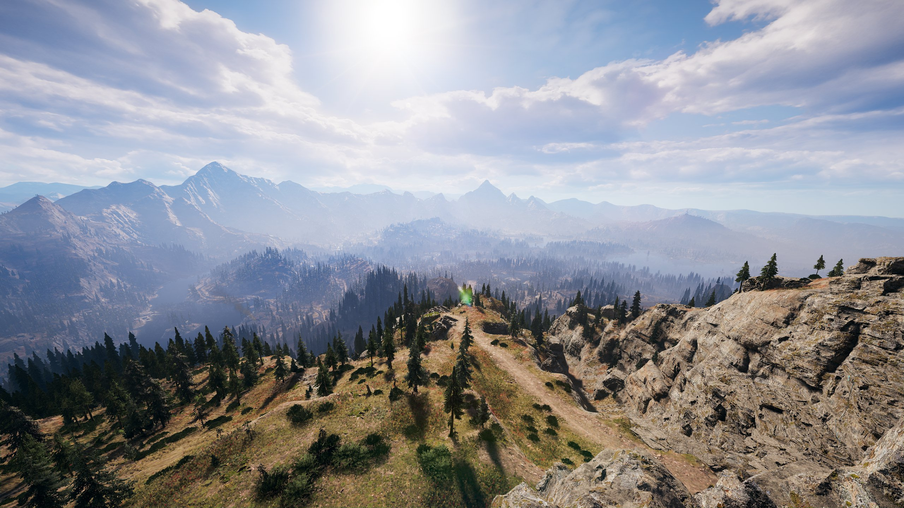
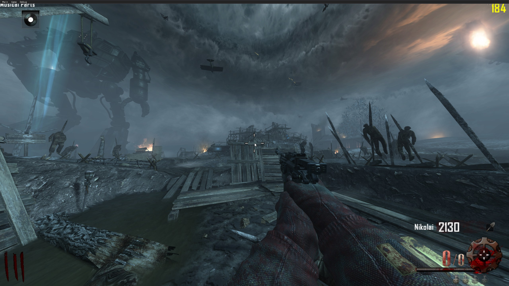

MI-349 Blog
About Me! Contact Me!Far Cry 5, A Second Chance
Far Cry 5 is the 9th game in Ubisoft's Far Cry series, while being the 5th main line entry in the franchise.The game was initially released on March 27th of 2018. Set in a rural Hope country in Montana, the game centers around a rookie sheriff building up local resistance to a cult, that controls and traps the population within the county. I played the game upon initial launch, as I have been a fan of the franchise since I played Far Cry 3 back in 2012. Upon release I played on console, as I had for the two previous games. My initial reaction was not the most positive, as I felt that the gameplay and story was a regression from the previous 2 titles. Primarily I felt the world was much less uninspired, and the main antagonists of the story, couldn't capture my attention to the same level as Vaas and Pagan Min had before. Recently however I Have begun to play through the game a second time, now on PC. This playthrough has completely changed my outlook on the release of the game, as I am much more understanding of the more down to earth tone they took with the setting, and the villains. The setting of Montana is beautiful, as it captures the incredible mountains and vivid forests and rivers of the northwestern united states, and while its setting is not as exotic as a country in the Himalayas, or a pirate controlled tropical island, it provides a beautiful natural world. This world is also a great setting for the stark contrast of the violence and suffering that comes at the hand of the Eden Gate cult. The villain, Joseph Seed, is also a much more subdued, but in all honesty much more realistic character, and one that understandably could exist in our modern world. The main antagonists, provide a chilling foreground to the otherwise natural beauty of the game. Overall, this Second Playthrough has provided me an experience to play the game in a new manner, and allow me to see the strengths of the game alone, instead of directly comparing it to some of my favorite games of all time. Looking at the game overall now, I believe I was unfairly rating the game in my head and was missing what made the game special.
Published on 10/13/2024 By Liam Glendening
Black Ops 2: A Timeless Personal Classic
Call of Duty: Black Ops 2 is the 10th entry in the wildly popular Call of Duty series published by Activision. I originally played this game during its yearlong life-cycle in 2012 on the Xbox 360. Back then, BO2 was my first introduction to the Call of Duty franchise, an introduction that would change into the series becoming my most played games of all time. For the scope of this post however, I would like to limit it to the side mode featured within the game, Zombies, a co-op horde survival mode where players progress through increasingly difficult waves of zombies, all while doing a myriad of side quest to progress the players strength and survivability. When I recently began to play the mode and the maps featured in BO2 again after years of not playing them, I was quickly hit with the stores of information on them I had gained in my childhood. I was also able to look at the game in a different light, as I was considerably better at the mechanics playing this time around. This time I focused much more on the side quests, and progression aspect of the game, instead of the basic survival aspect. This new freedom allowed me to finally see what made this mode so special to the zombies’ community, and that being excellent map design with killer atmospheres, refined gameplay loops, and maps that feature deep optimization and ways of playing that excite all groups of players. My love for the game really ignited again as I began completing the main quests of my two favorite maps, Mob of the Dead; Set in a purgatory that encompasses a hellish depiction of Alcatraz Island; and Origins; Set in 1918, on the frontlines of World War 1 in France. These two maps feature a complex quest that contains hidden steps to “completing” the map which requires a complete mastery of all the maps aspects to complete. These easter eggs or main quests are for the dedicated players, as many casual players are completely oblivious to their existence entirely. This new dimension of the gameplay loop, adds a new level of excitement and wish to continue playing, that I would never think I would find in a 10 year old release, let alone a Call of Duty Title. This dive into the deeper elements of BO2 has also lead me to regularly play the many titles that feature zombies, in order to master them to the best of my ability.